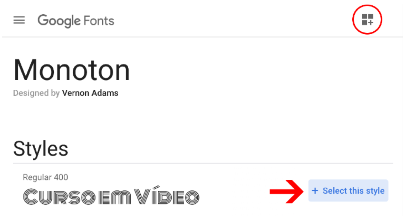
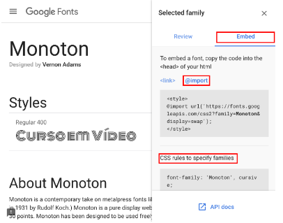

Usando fontes externas baixadas
Basta achar uma fonte que você goste (usei o dafont.com para pegar uma), baixar ela, colocar o arquivo dentro da pasta do seu site e fazer o seguinte:
@font-face {
font-family: 'minecraft'; /*Aqui você da o nome do arquivo*/
src: url('minecrafter/Minecrafter.Alt.ttf') format(truetype),
url('minecrafter/Minecrafter.Reg.ttf') format(truetype);
/*Na url você coloca o nome do arquivo e o caminho até ele, se preciso*/
}
/*
Tipos de format():
- opentype (otf)
- truetype (ttf)
- embedded-opentype
- truetype-aat (Apple Advanced Typography)
- svg
*/
Após isso basta você colocar o nome que você escolheu em "font-family", que no exemplo acima foi "minecraft". Infelizmente não funcionou, achoi que não era compatível com a acentuação.
Como descobrir uma fonte que está sendo usada em outro site?
A extensão Fonts Ninja lhe permite identificar a fonte usada em determinado texto. Basta instalá-la, clicar na ferramenta e colocar o mouse sobre uma parte do texto que deseja.
Além de mostrar a família tipográfica ela também indica o tamanho, peso (possíveis peso para a fonte), cor, espaçamento vertical e horizontal da fonte.
Detectando Fontes em Imagens
É possível detectar a fonte de uma letra presente em uma imagem, no entanto os resultados não são 100% precisos. Existem 3 sites que podem te ajudar a identificar a fonte:
- whatfontis.com
- fontsquirrel.com
- myfonts.com
Dentro de imagens você precisa de um pouco de visão computacional, de alguns algoritmos mostrados a seguir:
No "whatfontis.com" você tem que ter a imagem baixada e colocar ela como anexo no local instruído. Ele é o mais inteligente, mas mesmo assim ainda comete erros. Ele carrega a imagem e vê onde
é texto nela. No entanto ela não consegue detectar todas as fonte de uma vez, por isso você precisa clicar em uma fonte por vez.
Após selecioná-la você vai para o próximo passo, onde deve configurar
o contraste e o brilho, seu objetivo é facilitar a identificação das letras deixando-as contrastantes entre si, você também pode inverter as cores, entre outras coisas. Quanto mais cuidadoso você for
nessa parte, mais fácil será para o programa identificar a fonte. No terceiro passo você vai digitar as letras que compõem a palavra selecionada. Após isso ele vai mostrar os resultados obtidos da possível fonte.
No "fontsquirrel.com" ocorre algo bem similar, você vai em "font identifier", arrastar a imagem escolhida, ele vai pedir para você selecionar a palavra. Ele faz a identificação e a separação automática das letras. Mas ele peca um pouco na hora da identificação.
E , por fim, no "myfonts.com" você vai na opção "what the font" e faz o mesmo processo.
Se o "whatfontis.com" é melhor porque citar esses outros dois? Caso ele não consiga identificar a fonte ainda exite a possibilidade de que um dos outros sites identifique-a.
Como usar fontes do Google Fonts
Além das famílias tipográficas e fontes padronizadas disponíveis em navegadores, também podemos usar fontes externas sem necessidade de baixar ou instalá-las no computador dos visitantes.
Para isso exite o serviço Google Fonts, disponível em https://fonts.google.com. Ele possuí várias funções úteis.

- Se você sabe o nome da fonte basta digitar nessa área.
- Na segunda área você escreve um texto para ver como fica na fonte desejada.
- Tamanho da fonte a ser apresentado na tela.
- Categoria de fontes a ser exibidas, aquelas mostradas anteriormente, você pode escolher mais de uma categoria.
- Listas que se encaixam com as configurações feitas por você.
Após escolher a fonte clqiue sobre o nome dela (área 5) e aparecerá outra tela. Clique sobre o botão + Select this style e em seguida clique no icone superior marcado na imagem abaixo:

Ao clicar no ícone superior direito uma aba lateral chamada Selected family aparecerá.

Clique em Embed e em seguida @import para ter acesso aos código que serão usados no seu arquivo CSS. O código de cima será colocado na
primeira linha de sua declaração de estilo. O segundo código, em CSS rules, será colocado na propriedade font-family na declaração de todos os
seletores que iremos aplicar essa fonte.